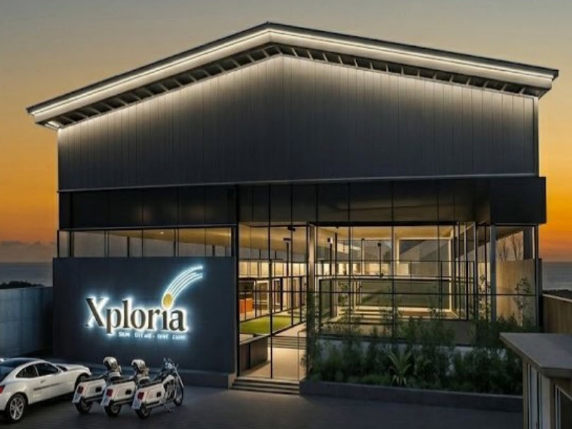

Mau beli lapangan padel super panoramic import dan bingung membedakan mana yang benar-benar berkualitas? 🎾 Wajar. Di pasaran, kata "panoramic" dipakai untuk hampir semua tipe court, padahal spesifikasinya bisa jauh berbeda — dari ketebalan kaca, jenis baja, sampai sertifikat komponennya.
Di panduan 2026 ini kita bahas tuntas sisi yang jarang dijelaskan penjual: apa itu super panoramic, spesifikasi yang menentukan kualitas, tabel perbandingan, alur pemesanan langkah demi langkah, estimasi biaya pasar, checklist RAB sebelum bayar DP, sampai kesalahan umum yang bikin proyek membengkak. Yuk simak sampai habis! 👇
💡 Intinya (Ringkasan Cepat)
Lapangan padel super panoramic adalah tipe court tanpa tiang di tengah area bermain, dengan dinding kaca tempered melengkung mengelilingi lapangan. Karena struktur baja membentang penuh, pandangan pemain dan penonton jadi bebas halangan. Kunci kualitasnya ada di kaca tempered 12 mm bersertifikat EN 12150, struktur baja hot-dip galvanized, rumput sintetis monofilamen, dan RAB yang memisahkan komponen secara transparan.
📌 Daftar Isi
- Apa Itu Lapangan Padel Super Panoramic?
- Spesifikasi & Komponen yang Menentukan Kualitas
- Panoramic vs Super Panoramic: Tabel Perbandingan
- Cara Memesan Lapangan Padel Import Super Panoramic (6 Langkah)
- Estimasi Biaya Pasar 2026
- Checklist RAB Sebelum Bayar DP
- 6 Kesalahan Umum Saat Membeli Lapangan Padel Import
- Peran NW28 ID & Padelkultura dalam Proyek Lapangan Padel
- FAQ Seputar Lapangan Padel Super Panoramic
- Kesimpulan
🎾 Apa Itu Lapangan Padel Super Panoramic?
Lapangan padel super panoramic adalah court yang dinding kaca tempered-nya membentang mengelilingi area permainan tanpa tiang sudut. Struktur baja dipasang pada rel atas dan bawah yang tersembunyi, sehingga pemain hanya melihat kaca bening — bukan rangka besi. Standar lapangan ganda adalah 20 m x 10 m (200 m²), sedangkan permainan tunggal memakai area 20 m x 6 m.
Tipe ini berbeda dengan panoramic biasa (masih ada empat tiang di sudut) dan tipe klasi (banyak tiang vertikal). Super panoramic paling diminati operator venue karena pandangan penonton lebih lega, lebih menarik untuk dokumentasi dan siaran turnamen, serta memberi kesan premium pada merek venue itu sendiri.
Cocok untuk siapa? Klub padel premium, hotel dan resort, private court pemilik rumah, serta venue yang menargetkan penyelenggaraan turnamen.
📐 Spesifikasi & Komponen yang Menentukan Kualitas
Sebelum membandingkan harga, pastikan Anda tahu komponen apa saja yang masuk dalam satu set lapangan padel super panoramic. Inilah daftar spesifikasi yang membedakan produk bagus dan produk asal murah:
| Komponen | Spesifikasi Standar Super Panoramic |
| Dimensi lapangan ganda | 20 m x 10 m (200 m²), toleransi dimensi mengacu regulasi FIP ±0,5% |
| Kaca tempered | 12 mm, sekitar 18 panel ukuran 2995 x 1995 mm, sertifikasi EN 12150-1/-2, tepi dipoles, uji heat soak |
| Struktur baja | Hot-dip galvanized (contoh profil 100x50x3 mm) sebagai standar terbaik; Q235 dengan powder coating untuk opsi ekonomis |
| Rumput sintetis | Pile 12 mm monofilamen, DTEX sekitar 9800-11000, infill pasir silika 5-15 kg/m² |
| Pagar wire mesh | Lubang 50x50 mm, diameter kawat 4 mm, tinggi total sekitar 4 m |
| Pencahayaan | 8 unit LED 200W, 300-533 lux, IP65, tiang di luar lapangan dengan sudut sekitar 45° |
| Net padel | Tinggi 88 cm di tengah dan 92 cm di tiang, tiang net rounded agar aman |
Komponen kecil sering jadi bahan penghematan diam-diam: baut stainless 304/316 diganti besi biasa, atau ketebalan kaca diturunkan dari 12 mm ke 10 mm tanpa memberi tahu pembeli. Karena itu semua spesifikasi di atas harus tertulis eksplisit di RAB.
⚖️ Panoramic vs Super Panoramic: Tabel Perbandingan
Bingung harus pilih yang mana? Tabel ringkas ini membantu Anda menentukan sesuai budget dan tujuan venue:
| Aspek | Panoramic Standar | Super Panoramic |
| Tiang | Masih ada tiang di sudut | Tanpa tiang di area bermain |
| Sudut pandang | Baik, sedikit terhalang tiang | Bebas halangan, paling nyaman |
| Kebutuhan presisi | Sedang | Tinggi (toleransi antar panel ketat) |
| Cocok untuk | Budget ketat, fokus fungsional | Venue premium, turnamen, siaran |
🛒 Cara Memesan Lapangan Padel Import Super Panoramic (6 Langkah)
Alur pemesanan yang rapi akan menyelamatkan Anda dari biaya tak terduga di tengah proyek. Urutannya seperti ini:
- Konsultasi kebutuhan & survei lokasi. Ukur lahan, cek akses pengiriman, dan pastikan tinggi bebas minimal 6 m untuk indoor (ideal 8 m lebih).
- Tentukan tier produk. Umumnya ada tiga pilihan: lokal, import Asia kelas menengah, dan import Eropa/unit premium. Sesuaikan dengan target pasar venue Anda.
- Verifikasi importir. Minta dokumen resmi, HS Code, NIB/API, dan pastikan lead time pengiriman tertulis jelas.
- Minta RAB detail + gambar kerja. Jangan bayar DP sebelum memisahkan biaya unit, pekerjaan sipil, dan instalasi.
- Sepakati termin, jadwal kirim, dan serah terima. Semua momen pembayaran harus terikat milestone yang bisa diperiksa.
- Instalasi & commissioning. Uji pantulan bola, cek lux meter, dan pastikan garansi tertulis sebelum pelunasan.
💰 Estimasi Biaya Pasar 2026
Disclaimer: seluruh angka berikut adalah estimasi pasar 2026, bukan penawaran resmi. Harga final bergantung lokasi, kondisi tanah, spesifikasi, kurs, dan volume proyek.
| Komponen | Estimasi Pasar |
| Unit super panoramic import (1 set) | Rp 300-400 juta (FOB Jabodetabek) |
| Struktur & rangka baja | sekitar Rp 85 juta |
| Kaca tempered (18 panel) | Rp 70-95 juta |
| Rumput sintetis 200+ m² | sekitar Rp 40 juta |
| Net & tiang net | sekitar Rp 10 juta |
| Lampu LED 8 unit | sekitar Rp 18 juta |
| Aksesoris & instalasi | sekitar Rp 25 juta |
| Pekerjaan sipil (pondasi, cor, drainase) | Rp 35-50 juta |
| Pengiriman & instalasi Jabodetabek | Rp 40-60 juta (luar Jawa Rp 60-100 juta) |
| Atap indoor (opsional) | Rp 350 juta ke atas |
Total satu proyek lapangan padel lengkap umumnya berada di rentang Rp 450 juta sampai Rp 2 miliar, tergantung indoor atau outdoor serta fasilitas pendukungnya. Untuk gambaran rincian per komponen, lihat juga artikel kami tentang biaya pembangunan lapangan padel per komponen.
✅ Checklist RAB Sebelum Bayar DP
Sebelum menandatangani kontrak dan membayar uang muka, periksa poin-poin berikut satu per satu. Contoh format RAB transparan bisa Anda lihat di halaman layanan kontraktor NW28 ID:
- Nominal per komponen tertulis jelas, bukan hanya "harga terima jadi" — struktur, kaca, rumput, dan lampu harus dipisah.
- Ketebalan kaca (12 mm) dan nomor sertifikat EN 12150-1/-2 dicantumkan eksplisit.
- Jenis baja disebut detail: hot-dip galvanized atau Q235 dengan powder coating.
- Spesifikasi rumput mencakup pile, DTEX, jenis serat, dan volume infill.
- Jumlah dan spesifikasi lampu: watt, target lux, dan rating IP.
- Scope pekerjaan sipil: galian, pondasi, drainase, dan kemiringan permukaan 1-1,5%.
- Termin pembayaran, durasi garansi, cakupan garansi, dan siapa yang menanggung mobilisasi.
⚠️ 6 Kesalahan Umum Saat Membeli Lapangan Padel Import
- Terlena harga murah tanpa cek ketebalan kaca. Kaca 10 mm sering dijual sebagai "panoramic" tanpa penjelasan.
- Tidak memisahkan biaya unit dan biaya sipil. Akibatnya budget meledak saat pekerjaan pondasi dimulai.
- Membeli tanpa importir resmi. Tidak ada garansi, tidak ada suku cadang, dan dokumen tidak lengkap.
- Mengabaikan tinggi bebas indoor. Minimum 6 m, ideal 8 m lebih, agar bola tidak menyentuh plafon.
- Lupa menghitung drainase dan pondasi. Lapangan bisa amblas atau tergenang saat hujan.
- Salah pilih pelaksana instalasi. Rangka kaca yang tidak presisi bikin panel rawan bocor dan retak.
🏗️ Peran NW28 ID & Padelkultura dalam Proyek Lapangan Padel
Produsen unit biasanya hanya memasok struktur dan kaca, sedangkan pekerjaan sipil seperti pondasi, cor, drainase, dan atap dikerjakan pihak lain. Di titik inilah proyek sering macet: spesifikasi unit dan gambar sipil tidak nyambung.

Sebagai kontraktor design-build di Bandung, NW28 ID (CV Natawira Dwi Ashta) menangani sisi konstruksi, sipil, dan interior dengan RAB transparan serta supervisi langsung di lapangan. Untuk pengadaan unit lapangan padel super panoramic, kami bekerja bersama kontraktor lapangan padel super panoramic terbaik di Indonesia yaitu Padelkultura, sehingga unit yang dipasang benar-benar sesuai spesifikasi dan bergaransi.
Pendekatan satu pintu ini memudahkan pemilik venue: satu koordinasi untuk desain, struktur, pengadaan unit, sampai serah terima. Jika Anda ingin membandingkan pilihan penyedia, baca juga artikel kontraktor dan penyedia lapangan padel terbaik di Indonesia.
❓ FAQ Seputar Lapangan Padel Super Panoramic
Apa bedanya lapangan padel super panoramic dan panoramic biasa?
Lapangan panoramic biasa masih memiliki empat tiang di sudut dan tiang vertikal di sepanjang sisi, sedangkan super panoramic menghilangkan tiang sudut sepenuhnya sehingga kaca tempered membentang tanpa sekat. Hasilnya pandangan pemain dan penonton jadi benar-benar bersih, cocok untuk venue premium, turnamen, dan siaran.
Apakah lapangan padel super panoramic wajib bersertifikat FIP?
Untuk lapangan rekreasi atau komersial biasa, sertifikasi FIP tidak selalu mutlak. Namun jika Anda menargetkan turnamen resmi atau kredibilitas internasional, pilih unit yang desainnya mengacu regulasi FIP dengan komponen kaca bersertifikat EN 12150-1/-2 serta lampu CE/IP65. Sertifikasi ini juga memudahkan proses sponsorship dan promosi venue.
Berapa lama pengerjaan sampai lapangan padel bisa dipakai?
Tergantung kondisi lahan dan tipe unit. Untuk unit import super panoramic yang sudah ready stock, pemasangan struktur dan kaca umumnya beberapa hari kerja, sedangkan pekerjaan sipil seperti pondasi, cor, dan drainase bisa memakan beberapa minggu. Untuk lapangan indoor lengkap dengan atap, total waktu biasanya 2-4 bulan. Pastikan jadwal kirim dan instalasi tertulis di kontrak.
Berapa estimasi biaya satu lapangan padel super panoramic import?
Berdasarkan data pasar 2026, unit super panoramic import berada di kisaran Rp 300-400 juta per set (FOB Jabodetabek), sementara total proyek lengkap dengan sipil, pengiriman, dan instalasi umumnya Rp 450 juta hingga Rp 2 miliar tergantung indoor atau outdoor. Angka ini estimasi pasar, bukan penawaran resmi, dan harga final bergantung lokasi, kurs, serta spesifikasi.
Apakah bisa beli unit saja tanpa jasa instalasi?
Bisa. Banyak importir menjual paket satu set lengkap maupun per komponen, dan sebagian menerima jasa instalasi saja. Namun super panoramic sangat sensitif terhadap presisi struktur karena toleransi antar panel kaca idealnya maksimal 2 mm, jadi sebaiknya tetap gunakan tim instalasi berpengalaman. Jika membeli unit saja, pastikan Anda punya kontraktor sipil yang memahami spesifikasi lapangan padel.
Bagaimana memastikan kaca tempered yang dipasang benar-benar 12 mm?
Minta sertifikat material dan dokumen EN 12150-1/-2 dari supplier, lalu verifikasi fisik ketebalan panel serta jumlah panelnya, umumnya 18 panel berukuran 2995 x 1995 mm untuk lapangan ganda. Tanyakan juga ada atau tidaknya hasil uji heat soak untuk mengurangi risiko pecah spontan. Lakukan pengecekan ini sebelum pelunasan dan tulis spesifikasinya di dalam RAB.
🎯 Kesimpulan
Lapangan padel super panoramic adalah pilihan paling nyaman sekaligus paling bernilai jual untuk venue modern. Kuncinya bukan pada harga termurah, tetapi pada spesifikasi yang jelas — kaca tempered 12 mm bersertifikat, struktur baja hot-dip galvanized, rumput sintetis yang tepat, dan RAB transparan yang memisahkan unit, sipil, dan instalasi.
Dengan material dan pelaksanaan yang benar, biaya perawatan jangka panjang lebih rendah dan titik balik modal (BEP) venue bisa lebih cepat tercapai.
💬 Butuh bantuan menghitung kebutuhan lapangan padel super panoramic Anda? Tim NW28 ID siap membantu survei lokasi dan menyusun estimasi RAB, berkoordinasi dengan Padelkultura untuk pengadaan unitnya. Kantor kami di Jl. Gudang Utara No.28, Bandung. Konsultasi gratis via WhatsApp sekarang.
Disclaimer: artikel ini bersifat informasi umum. Semua angka biaya adalah estimasi pasar 2026, bukan penawaran resmi. Harga dan ketersediaan dapat berubah sesuai spesifikasi, kurs, dan kondisi lapangan.
🎾 Siap mewujudkan lapangan padel super panoramic impian Anda?
Konsultasi gratis & survei lokasi bersama NW28 ID — kontraktor design-build Bandung dengan 500+ proyek dan 10+ tahun pengalaman. Hubungi kami di WhatsApp +62 813-1236-4679 atau kunjungi kantor di Jl. Gudang Utara No.28, Bandung.